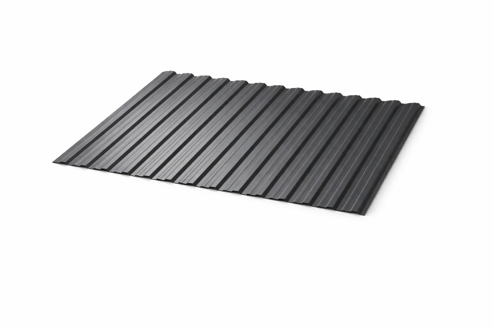

Tablă cutată H-7
Model premium cu profil trapezoidal de 7 mm, disponibil și în variantă perforată pentru ventilație sau proiecte cu cerințe speciale de design.
| Înălțime cută | 7 mm |
| Lățime totală | 1210 mm |
| Lățime utilă | 1180 mm |
| Lungime minimă | 200 mm |
| Lungime maximă | 8000 mm |
| Înclinație minimă | 15° |